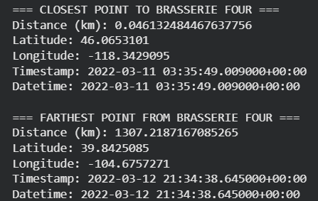

Name: Amelia Pucek
Date: 04/27/2026
Course: CS-215
This project analyzes GPS movement data from Professor Wirfs-Brock’s visit in March 2022. Using geospatial techniques, I explored how her movement varied over time and space.
The analysis includes:
I used Brasserie Four in Walla Walla as a reference location and computed distances from all GPS points.

These results show both local presence and long-distance travel.
The dataset was visualized using interactive Plotly maps to show spatial movement patterns over time.
Open Movement MapTo better understand movement structure, I grouped GPS coordinates into geographic clusters based on rounded latitude and longitude values.
The data shows structured movement patterns with clear geographic separation between regions rather than continuous travel.